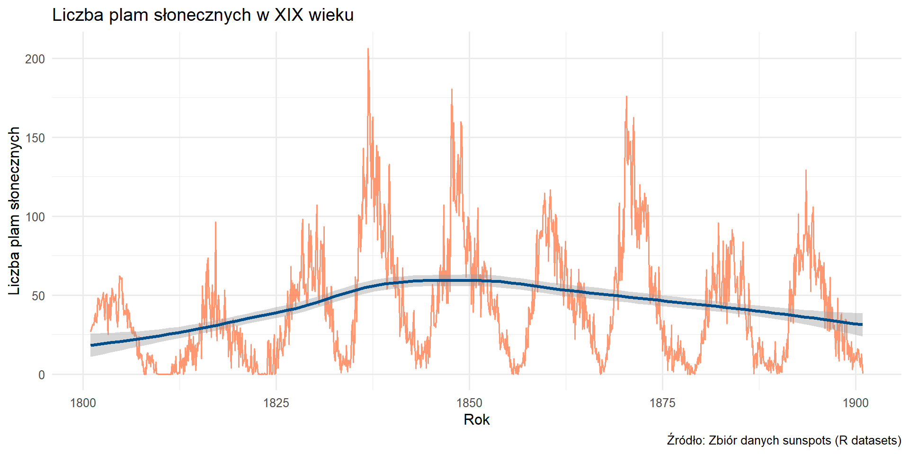
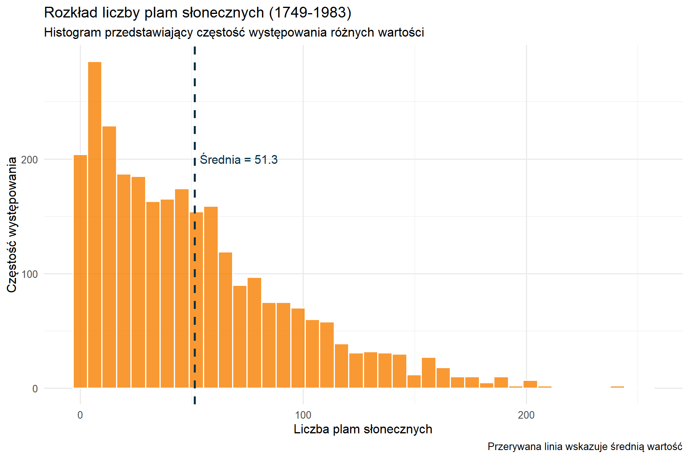
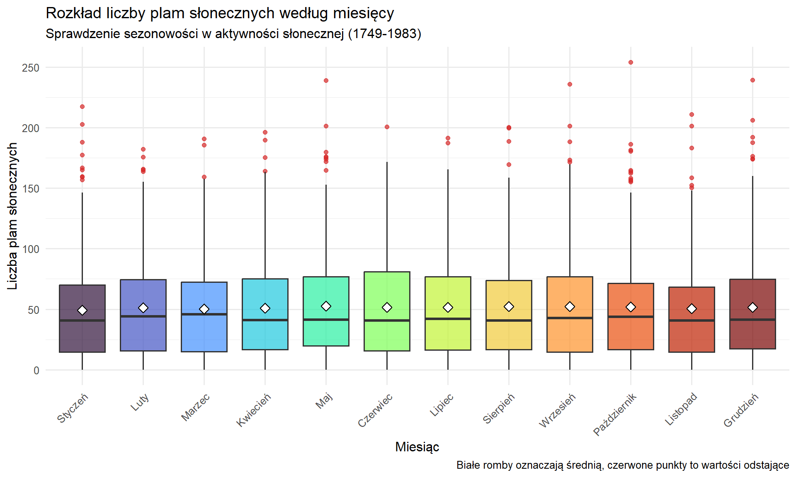

Analiza aktywności słonecznej
2026-01-18
Last updated: 2026-01-18
Checks: 7 0
Knit directory: Projekt/
This reproducible R Markdown analysis was created with workflowr (version 1.7.2). The Checks tab describes the reproducibility checks that were applied when the results were created. The Past versions tab lists the development history.
Great! Since the R Markdown file has been committed to the Git repository, you know the exact version of the code that produced these results.
Great job! The global environment was empty. Objects defined in the global environment can affect the analysis in your R Markdown file in unknown ways. For reproduciblity it’s best to always run the code in an empty environment.
The command set.seed(20260116) was run prior to running
the code in the R Markdown file. Setting a seed ensures that any results
that rely on randomness, e.g. subsampling or permutations, are
reproducible.
Great job! Recording the operating system, R version, and package versions is critical for reproducibility.
Nice! There were no cached chunks for this analysis, so you can be confident that you successfully produced the results during this run.
Great job! Using relative paths to the files within your workflowr project makes it easier to run your code on other machines.
Great! You are using Git for version control. Tracking code development and connecting the code version to the results is critical for reproducibility.
The results in this page were generated with repository version 4ad4a6e. See the Past versions tab to see a history of the changes made to the R Markdown and HTML files.
Note that you need to be careful to ensure that all relevant files for
the analysis have been committed to Git prior to generating the results
(you can use wflow_publish or
wflow_git_commit). workflowr only checks the R Markdown
file, but you know if there are other scripts or data files that it
depends on. Below is the status of the Git repository when the results
were generated:
Ignored files:
Ignored: .RData
Ignored: .Rhistory
Ignored: .Rproj.user/
Untracked files:
Untracked: analysis/assets/
Unstaged changes:
Modified: analysis/prezentacja.qmd
Note that any generated files, e.g. HTML, png, CSS, etc., are not included in this status report because it is ok for generated content to have uncommitted changes.
These are the previous versions of the repository in which changes were
made to the R Markdown (analysis/analiza.Rmd) and HTML
(docs/analiza.html) files. If you’ve configured a remote
Git repository (see ?wflow_git_remote), click on the
hyperlinks in the table below to view the files as they were in that
past version.
| File | Version | Author | Date | Message |
|---|---|---|---|---|
| Rmd | 4ad4a6e | 96246-Stosik | 2026-01-18 | Complete workflowr project |
| Rmd | 6210ced | 96246-Stosik | 2026-01-18 | Start workflowr project. |
Wprowadzenie
Opis zbioru danych
Zbiór danych sunspots zawiera miesięczną liczbę plam słonecznych (sunspots) zaobserwowanych od stycznia 1749 roku do grudnia 1983 roku.
Źródło: Wbudowany zbiór danych w R
(datasets::sunspots)
Co przedstawia: Plamy słoneczne to ciemne obszary na powierzchni Słońca związane z intensywną aktywnością magnetyczną. Ich liczba zmienia się cyklicznie, co ma wpływ na:
- pogodę kosmiczną
- komunikację radiową na Ziemi
- satelity i sieci elektryczne

NASA Goddard Space Flight Center from Greenbelt, MD, USA
Cykl słoneczny trwa średnio około 11 lat.
Dane
data <- data.frame(
rok = floor(time(sunspots)),
miesiac = cycle(sunspots),
plamy = as.numeric(sunspots),
czas = as.numeric(time(sunspots))
)
data$miesiac <- factor(data$miesiac, labels = c("Styczeń", "Luty", "Marzec", "Kwiecień",
"Maj", "Czerwiec", "Lipiec", "Sierpień",
"Wrzesień", "Październik", "Listopad", "Grudzień"))
head(data) rok miesiac plamy czas
1 1749 Styczeń 58.0 1749.000
2 1749 Luty 62.6 1749.083
3 1749 Marzec 70.0 1749.167
4 1749 Kwiecień 55.7 1749.250
5 1749 Maj 85.0 1749.333
6 1749 Czerwiec 83.5 1749.417Wyjasnienie kolumn
- rok - rok obserwacji
- miesiac - factor z polskimi nazwami miesięcyh
- plamy - liczba zaobserwowanych plam słonecznych
- czas - ciągła reprezentacja czasu jako liczba dziesiętna (rok + miesiąc/12)
Podstawowe Statystyki plam
summary(data$plamy) Min. 1st Qu. Median Mean 3rd Qu. Max.
0.00 15.70 42.00 51.27 74.92 253.80 Analiza danych
Przekształcenia danych z użyciem dplyr
1. Filtrowanie danych
Dane tylko z XIX wieku
filtered = data %>%
filter(rok >= 1801, rok <= 1900)
cat("Liczba wierszy przed filtrowaniem:", nrow(data), "\n")Liczba wierszy przed filtrowaniem: 2820 cat("Liczba wierszy po filtrowaniu:", nrow(filtered), "\n")Liczba wierszy po filtrowaniu: 1200 cat("Zakres lat:", min(filtered$rok), "-", max(filtered$rok))Zakres lat: 1801 - 1900filtered %>%
head(25) %>%
kbl(caption = "Pierwsze 25 wierszy") %>%
kable_classic(full_width = F, html_font = "Palatino")| rok | miesiac | plamy | czas |
|---|---|---|---|
| 1801 | Styczeń | 27.0 | 1801.000 |
| 1801 | Luty | 29.0 | 1801.083 |
| 1801 | Marzec | 30.0 | 1801.167 |
| 1801 | Kwiecień | 31.0 | 1801.250 |
| 1801 | Maj | 32.0 | 1801.333 |
| 1801 | Czerwiec | 31.2 | 1801.417 |
| 1801 | Lipiec | 35.0 | 1801.500 |
| 1801 | Sierpień | 38.7 | 1801.583 |
| 1801 | Wrzesień | 33.5 | 1801.667 |
| 1801 | Październik | 32.6 | 1801.750 |
| 1801 | Listopad | 39.8 | 1801.833 |
| 1801 | Grudzień | 48.2 | 1801.917 |
| 1802 | Styczeń | 47.8 | 1802.000 |
| 1802 | Luty | 47.0 | 1802.083 |
| 1802 | Marzec | 40.8 | 1802.167 |
| 1802 | Kwiecień | 42.0 | 1802.250 |
| 1802 | Maj | 44.0 | 1802.333 |
| 1802 | Czerwiec | 46.0 | 1802.417 |
| 1802 | Lipiec | 48.0 | 1802.500 |
| 1802 | Sierpień | 50.0 | 1802.583 |
| 1802 | Wrzesień | 51.8 | 1802.667 |
| 1802 | Październik | 38.5 | 1802.750 |
| 1802 | Listopad | 34.5 | 1802.833 |
| 1802 | Grudzień | 50.0 | 1802.917 |
| 1803 | Styczeń | 50.0 | 1803.000 |
2. Grupowanie i agregacja
dekady = data %>%
mutate(dekada = floor(rok / 10) * 10) %>%
group_by(dekada) %>%
summarise(
srednia_plam = mean(plamy),
max_plam = max(plamy),
min_plam = min(plamy),
)
dekady %>%
kbl(caption = "Średnia aktywnośc według dekad") %>%
kable_classic(full_width = F, html_font = "Palatino")| dekada | srednia_plam | max_plam | min_plam |
|---|---|---|---|
| 1740 | 80.92500 | 158.6 | 55.7 |
| 1750 | 37.55083 | 103.0 | 0.0 |
| 1760 | 53.74000 | 158.2 | 3.0 |
| 1770 | 71.38833 | 238.9 | 0.0 |
| 1780 | 71.23250 | 174.0 | 6.0 |
| 1790 | 35.89167 | 127.5 | 0.0 |
| 1800 | 27.51000 | 62.3 | 0.0 |
| 1810 | 20.87583 | 96.2 | 0.0 |
| 1820 | 27.03250 | 98.0 | 0.0 |
| 1830 | 67.36333 | 206.2 | 1.0 |
| 1840 | 57.00583 | 180.4 | 3.5 |
| 1850 | 42.72583 | 114.6 | 0.0 |
| 1860 | 48.81500 | 116.7 | 0.0 |
| 1870 | 51.29167 | 176.0 | 0.0 |
| 1880 | 37.69167 | 95.8 | 0.2 |
| 1890 | 44.94000 | 129.2 | 0.6 |
| 1900 | 35.53417 | 108.2 | 0.0 |
| 1910 | 39.14167 | 154.5 | 0.0 |
| 1920 | 42.05083 | 108.0 | 0.5 |
| 1930 | 51.09000 | 165.3 | 0.2 |
| 1940 | 71.85333 | 201.3 | 0.3 |
| 1950 | 91.62000 | 253.8 | 0.2 |
| 1960 | 60.89167 | 146.3 | 3.1 |
| 1970 | 61.62583 | 188.4 | 1.9 |
| 1980 | 119.48750 | 179.9 | 33.3 |
Możemy zauważyć znaczne wahania aktywności słonecznej między dekadami. Najwyższa średnia aktywność występowała w latach 1980-1989.
3. Obliczenie rocznych statystyk
roczne = data %>%
group_by(rok) %>%
summarise(
srednia_roczna = mean(plamy),
max_roczne = max(plamy),
suma_roczna = sum(plamy)
) %>%
mutate(
kategoria = case_when(
srednia_roczna < 50 ~ "Niska aktywność",
srednia_roczna < 100 ~ "Średnia aktywność",
TRUE ~ "Wysoka aktywność"
)
)
roczne %>%
group_by(kategoria) %>%
summarise(liczba_lat = n()) %>%
kbl(caption = "Liczb lat o określonej aktywności") %>%
kable_classic(full_width = F, html_font = "Palatino")| kategoria | liczba_lat |
|---|---|
| Niska aktywność | 137 |
| Wysoka aktywność | 32 |
| Średnia aktywność | 66 |
Wizualizacje
Wykres 1:
ggplot(filtered, aes(x = czas, y = plamy)) +
geom_line(color = "#FF6B35", alpha = 0.7) +
geom_smooth(method = "loess", color = "#004E89", se = TRUE) +
labs(
title = "Liczba plam słonecznych w XIX wieku",
x = "Rok",
y = "Liczba plam słonecznych",
caption = "Źródło: Zbiór danych sunspots (R datasets)"
) +
theme_minimal(base_size = 12) Wykres liniowy wyraźnie pokazuje cykliczny charakter aktywności słonecznej. Niebieska linia trendu (loess) pomaga dostrzec ogólne wzorce. Możemy zaobserwować regularne wzrosty i spadki liczby plam słonecznych, potwierdzające istnienie cyklu słonecznego.
Wykres 2: Rozkład liczby plam słonecznych (histogram)
ggplot(data, aes(x = plamy)) +
geom_histogram(bins = 40, fill = "#F77F00", color = "white", alpha = 0.8) +
geom_vline(aes(xintercept = mean(plamy)),
color = "#003049", linetype = "dashed", size = 1) +
annotate("text", x = mean(data$plamy) + 20, y = 200,
label = paste("Średnia =", round(mean(data$plamy), 1)),
color = "#003049", size = 4) +
labs(
title = "Rozkład liczby plam słonecznych (1749-1983)",
subtitle = "Histogram przedstawiający częstość występowania różnych wartości",
x = "Liczba plam słonecznych",
y = "Częstość występowania",
caption = "Przerywana linia wskazuje średnią wartość"
) +
theme_minimal(base_size = 12) HIstogram pokazuje, że najczęściej obserwowano stosunkowo niską aktywność (0-50 plam), ale zdarzały się także okresy bardzo wysokiej aktywności przekraczającej 200 plam. Średnia wartość wynosi około 51 plam miesięcznie.
Wykres 3: Sezonowość aktywności słonecznej (boxplot)
ggplot(data, aes(x = miesiac, y = plamy, fill = miesiac)) +
geom_boxplot(alpha = 0.7, outlier.color = "#D62828") +
stat_summary(fun = mean, geom = "point", shape = 23, size = 3,
fill = "white", color = "black") +
labs(
title = "Rozkład liczby plam słonecznych według miesięcy",
subtitle = "Sprawdzenie sezonowości w aktywności słonecznej (1749-1983)",
x = "Miesiąc",
y = "Liczba plam słonecznych",
caption = "Białe romby oznaczają średnią, czerwone punkty to wartości odstające"
) +
scale_fill_viridis_d(option = "turbo") +
theme_minimal(base_size = 12) +
theme(
axis.text.x = element_text(angle = 45, hjust = 1),
legend.position = "none"
) Boxplot nie wykazuje istotnych różnic w rozkładzie plam słonecznych między miesiącami, co potwierdza, że aktywność słoneczna nie ma charakteru sezonowego - cykle 11-letnie są niezależne od pór roku na Ziemi. Mediana i średnia wartości są zbliżone dla wszystkich miesięcy.
sessionInfo()R version 4.4.2 (2024-10-31 ucrt)
Platform: x86_64-w64-mingw32/x64
Running under: Windows 11 x64 (build 26100)
Matrix products: default
locale:
[1] LC_COLLATE=English_United Kingdom.utf8
[2] LC_CTYPE=English_United Kingdom.utf8
[3] LC_MONETARY=English_United Kingdom.utf8
[4] LC_NUMERIC=C
[5] LC_TIME=English_United Kingdom.utf8
time zone: Europe/Warsaw
tzcode source: internal
attached base packages:
[1] stats graphics grDevices utils datasets methods base
other attached packages:
[1] kableExtra_1.4.0 tidyr_1.3.2 ggplot2_4.0.1 dplyr_1.1.4
[5] workflowr_1.7.2
loaded via a namespace (and not attached):
[1] sass_0.4.10 generics_0.1.4 xml2_1.5.1 lattice_0.22-7
[5] stringi_1.8.7 digest_0.6.39 magrittr_2.0.3 evaluate_1.0.5
[9] grid_4.4.2 RColorBrewer_1.1-3 fastmap_1.2.0 Matrix_1.7-4
[13] rprojroot_2.1.1 jsonlite_2.0.0 processx_3.8.6 whisker_0.4.1
[17] ps_1.9.1 promises_1.5.0 mgcv_1.9-4 httr_1.4.7
[21] purrr_1.2.1 viridisLite_0.4.2 scales_1.4.0 textshaping_1.0.4
[25] jquerylib_0.1.4 cli_3.6.3 rlang_1.1.7 splines_4.4.2
[29] withr_3.0.2 cachem_1.1.0 yaml_2.3.12 otel_0.2.0
[33] tools_4.4.2 httpuv_1.6.16 vctrs_0.6.5 R6_2.6.1
[37] lifecycle_1.0.5 git2r_0.36.2 stringr_1.6.0 fs_1.6.6
[41] pkgconfig_2.0.3 callr_3.7.6 pillar_1.11.1 bslib_0.9.0
[45] later_1.4.5 gtable_0.3.6 glue_1.8.0 Rcpp_1.1.1
[49] systemfonts_1.3.1 xfun_0.55 tibble_3.3.1 tidyselect_1.2.1
[53] rstudioapi_0.18.0 knitr_1.51 farver_2.1.2 nlme_3.1-168
[57] htmltools_0.5.9 labeling_0.4.3 rmarkdown_2.30 svglite_2.2.2
[61] compiler_4.4.2 getPass_0.2-4 S7_0.2.1